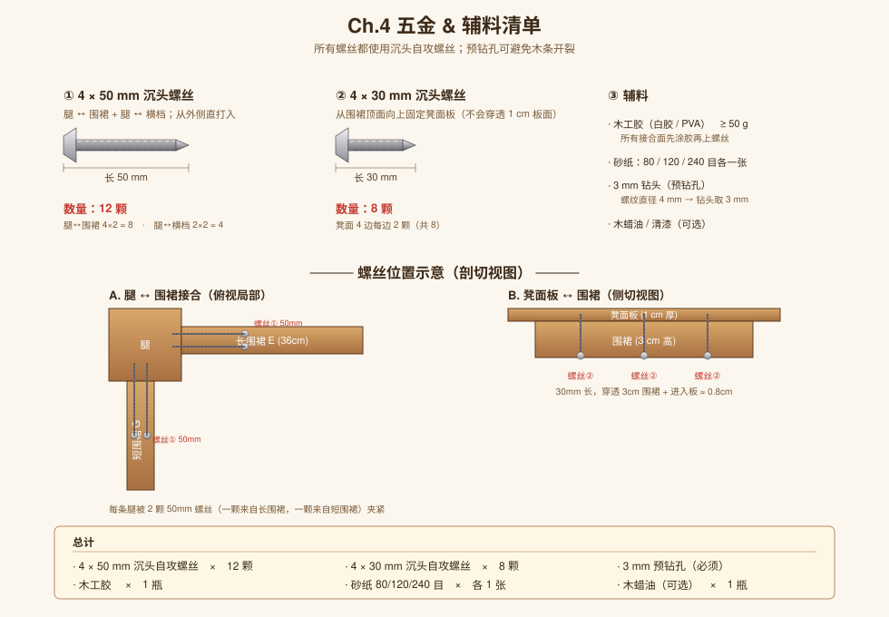

Ch.4 五金 & 辅料
螺丝规格、数量、位置示意

图 4.1 · 螺丝规格与接合处的剖切示意
螺丝
| 规格 | 数量 | 用途 |
|---|---|---|
| ① 4 × 50 mm 沉头自攻螺丝 | 12 颗 | 腿 ↔ 围裙 8 颗（每条腿 2 颗）+ 腿 ↔ 横档 4 颗（每端 1 颗） |
| ② 4 × 30 mm 沉头自攻螺丝 | 8 颗 | 围裙 ↔ 凳面板（每边 2 颗） |
辅料
- 木工胶（PVA 白胶）≥ 50 g
- 砂纸 80 / 120 / 240 目 各 1 张
- 3 mm 钻头（预钻孔，避免木条开裂）
- 木蜡油 / 清漆（可选，做表面处理）
工具
- 手锯 或 电锯
- 卷尺、铅笔、角尺
- 电钻 + 沉头钻头
- 螺丝刀
- 夹具（有最好）
螺丝位置原则
- 腿 ↔ 围裙：从围裙外侧打入腿内。50 mm 长度足够穿透围裙（3 cm）并咬住腿（约 2 cm）。
- 腿 ↔ 横档：从腿外侧打入横档端面。50 mm 穿过 4 cm 腿后咬住横档约 1 cm，每端 1 颗。
- 围裙 ↔ 凳面板：从围裙顶面向上打入板，30 mm 长，穿过 3 cm 围裙后进入板 0.8 cm，不会穿透 1 cm 板面。
⚠️ 4 × 50 mm 是螺纹直径 4 mm，预钻孔要用 3 mm 钻头（比螺纹小 1 mm），否则木条容易劈裂。